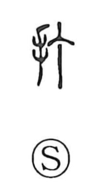

打

Uncategorized
Kun: utsu, uchi | On: da, ta
to strike ・ to hit
Explanation
打 is a phono-semantic character built from the hand element and 丁. 丁 originally depicts the flat head of a nail and here serves as the phonetic, while the whole graph evokes the act of driving a nail, giving the core sense “to strike, to hit.” The sound value of 丁 (tei), likened to the sharp ding of a blow on a nail head, suits this image. Later, 打 came to stand before verbs: from the Edo period in Sino-Japanese compounds such as 打聴 and 打睡 as a light prefixed element, and in classical Japanese as uchi- in forms like 打ち興ずる and うち見る, where it intensifies the following verb or simply smooths the rhythm of the phrase.